Trigonométrie - Cours
Introduction historique
-
VII AVJC : les babyloniens utilisent le degré :
- ils observent que les planètes du système solaire se déplacent dans une zone restreinte du ciel : le zodiaque : 12 constellations ;
- le soleil cache successivement chaque constellation ⭢ chaque mois
- un cercle, représentant l'année, peut donc être divisé en : 12 mois × 30 jours = 360 subdivisions.
- Révolution française : système métrique 90° = 100 gon (grades) ;
- 1873 J. Thomson : unité SI : le radian.
Mesurer des angles
Le radian
Étant donné un arc de cercle \(\overset{\frown}{l}\) de longueur \(l\) et de
rayon
\(R\),
la mesure en radians de l'angle géométrique \(\widehat{\alpha}\) est :
\(\displaystyle\alpha=\frac{l}{R}\)
Un câble repose sur une poulie de diamètre 30cm. Une extrémité du câble est tendue
horizontalement et l'autre verticalement.
Calculer la longueur de câble en contact avec la poulie.
Calculer la longueur de câble en contact avec la poulie.
Les mesures en degré et radians sont proportionnelles :
180° = π rad
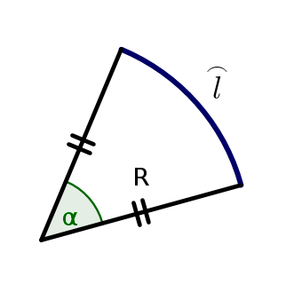
Compléter :
| en radian | \(\frac{\pi}{6}\) | \(\frac{\pi}{4}\) | \(\frac{\pi}{3}\) | \(\frac{2\pi}{3}\) | \(\frac{3\pi}{4}\) | \(\frac{5\pi}{4}\) | \(\frac{3\pi}{3}\) | \(\frac{7\pi}{4}\) |
|---|---|---|---|---|---|---|---|---|
| en degré | ... | ... | ... | ... | ... | ... | ... | ... |
| nom | ... | droit | ... | ... | ... | ... | ... | ... |
Orientation du plan
\begin{tabular}{l|c|l|c|} \cline{2-2} \cline{4-4} ~~~~~~~~~~&sens direct&~~~~~~~~~~&sens indirect\cline{2-2} \cline{4-4} &trigonométrique & &
&anti-horaire & & horaire
& giratoire & &
\cline{2-2} \cline{4-4} \end{tabular} Convention : On oriente le plan dans le sens direct.
!!!!!!
En général, on nomme ou on énumère les sommets d'un polygone dans le sens direct.
Le cercle trignométrique
Dans un repère orthonormé, le cercle trigonométrique est le cercle qui a pour
centre le
centre du repère et qui est de rayon \(1\). On l'oriente dans le sens direct.
!!!!!!
Le périmètre de ce cercle est donc \(2\pi R=2\pi\times1=2\pi\).
Mesure des angles orientés
!!!!!!
On utilise le cercle trigonométrique pour mesurer des angles, de la même façon que l'on utilise un
rapporteur
:Soit \(\left(\overrightarrow{u};\overrightarrow{v}\right)\) une paire de vecteurs non nuls. On souhaite mesurer en radians l'angle orienté noté \(\widehat{\left(\overrightarrow{u};\overrightarrow{v}\right)}\), angle permettant de passer (par rotation) de la direction de \(\overrightarrow{u}\) à celle de \(\overrightarrow{v}\).
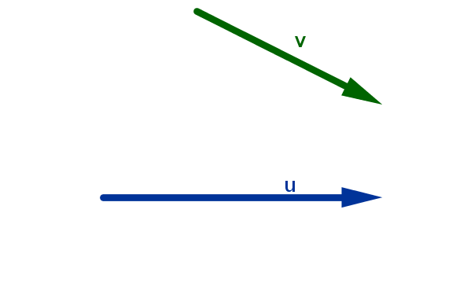
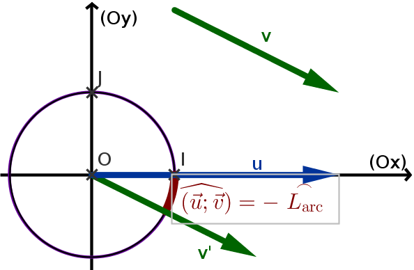
\begin{itemize
Enroulement de la droite \(\R\) sur le cercle trigonométrique
Par la construction exposée dans ce paragraphe, on a voulu pouvoir prendre en compte dans les mesures d'angles le fait de faire plusieurs tours :
!!!!!!
On peut «enrouler», en conservant les longueurs (cette opération s'appelle revêtement
isométrique),
une
droite graduée représentant \(\R\) sur le cercle trigonométrique, conventionnellement, de la façon
indiquée
sur
le schéma suivant :
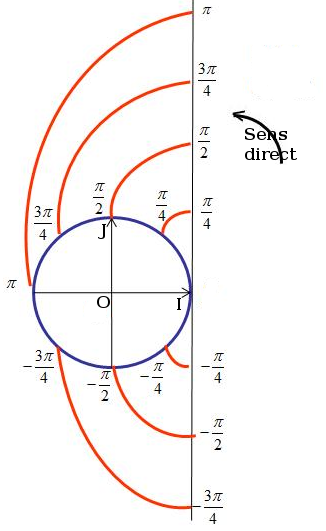
!!!!!!
\begin{itemize}
!!!!!!
\(\displaystyle\begin{array}{rcl}
\R & \rightarrow & \textrm{CT} \hline \ldots~;~-2\pi~;~0~;~2\pi;~\ldots & \mapsto & I={1\choose0}
\ldots~;~-\frac{3\pi}{2}~;~\frac{\pi}{2}~;~\frac{5\pi}{2};~\ldots & \mapsto & J={0\choose1}
\ldots~:~-\pi~;~3\pi;~\ldots & \mapsto & {-1\choose0}
\end{array}\)
Donner \(4\) réels ayant la même image sur le cercle trigonométrique que le réel
\(\frac{\pi
{4}\).}Un snowboarder effectue \(2\) tours dans le sens indirect.
Donner en radian la mesure d'angle correspondante, avant qu'il ne tombe.
Donner en radian la mesure d'angle correspondante, avant qu'il ne tombe.
Congruences
soit deux réels \(t\) et \(t'\).
Lorsqu'il existe un entier (relatif) \(k\) tel que \(t=t'+2k\pi\), ce qui revient à dire que \(t\) et \(t'\) s'envoient sur la même point sur le cercle trigonométrique, on dit que \(t\) et \(t'\) sont congrus modulo \(2\pi\), et on écrit :
\(\displaystylet \equiv t' \pmod {2\pi}\textrm{~~~ou bien ~~~} t \equiv t'~~~(2\pi)\)
Lorsqu'il existe un entier (relatif) \(k\) tel que \(t=t'+2k\pi\), ce qui revient à dire que \(t\) et \(t'\) s'envoient sur la même point sur le cercle trigonométrique, on dit que \(t\) et \(t'\) sont congrus modulo \(2\pi\), et on écrit :
!!!!!!
Deux mesures d'angles en radians congrues modulo \(2\pi\) correspondent au même angle
géométrique.A-t-on \(\frac{5\pi
{2} \equiv \frac{-\pi}{2} \pmod {2\pi}\) ?}
!!!!!!
Si \(x \equiv x' \pmod {2\pi}\) et \(y \equiv y' \pmod {2\pi}\) et \(z\neq0\), on a :
\begin{itemize}
\end{itemize}
Résoudre et représenter les solutions sur le cercle trigonométrique :
\begin{itemize
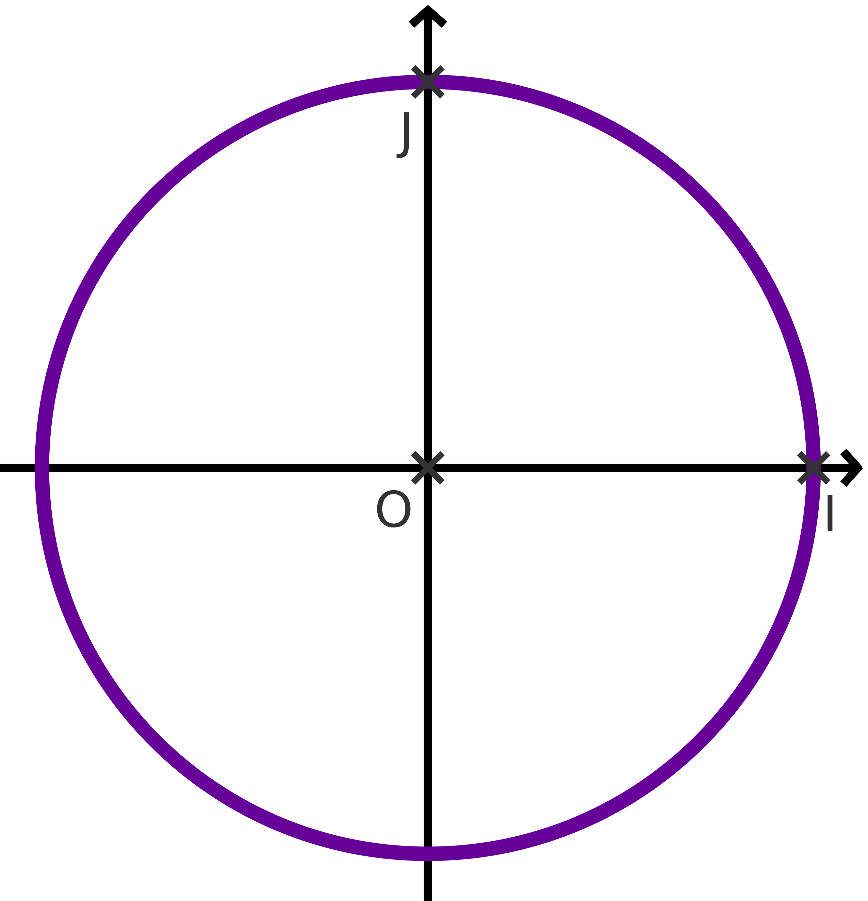
!!!!!!
\begin{itemize}
et ont même sens ;
et sont de sens opposés. \end{itemize}
Mesure principale
Un clown fait \(10\)\,m sans déraper sur un monocycle dont la roue de centre \(O\)
à un
rayon
de \(20\)\,cm, puis tombe et rigole.
Combien de tours a fait la roue avant la chute ?
Le clown avait marqué sur sa roue le point de contact avec le sol (point \(A\)). Au moment de sa chute, le dernier point de contact avec le sol est \(B\).
Trouver la mesure en radians de \(\widehat{AOB
\).}Combien de tours a fait la roue avant la chute ?
Le clown avait marqué sur sa roue le point de contact avec le sol (point \(A\)). Au moment de sa chute, le dernier point de contact avec le sol est \(B\).
Trouver la mesure en radians de \(\widehat{AOB
On appelle mesure principale d'un angle \(x\) le nombre \(mp(x)\) tel que :
\(\displaystylex \equiv mp(x) \pmod{2\pi}\textrm{~~~et~~~}mp(x)\in\left[0;2\pi\right[\)
!!!!!!
Parmi tous les représentants de \(x\) modulo \(2\pi\), la mesure principale est le seul représentant
de
\(x\)
dans l'intervalle \(\left[0,2\pi\right[\).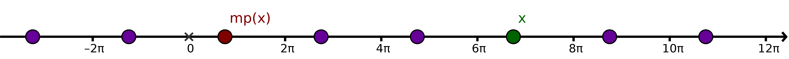
Calculatrice : \(mp(x)=\textrm{partdéc}(x/(2\pi))*2\pi\)
À la main : On calcule le quotient \(q\) de \(x\) par \(2\pi\) et on soustrait \(2\pi q\) à \(x\) si \(x>0\), ou on ajoute \(2\pi(q+1)\) à \(x\) si \(x<0\).
Calculer les mesures principales des angles suivants :
{3}\) ;
- \(\dfrac{5\pi
Compléments sur les angles
!!!!!!
Relation de ChaslesSi \(\overrightarrow{u}\), \(\overrightarrow{v}\), \(\overrightarrow{w}\) sont trois vecteurs non nuls, on a : \(\displaystyle\widehat{\left(\overrightarrow{u};\overrightarrow{v}\right)}+\widehat{\left(\overrightarrow{v};\overrightarrow{w}\right)}\equiv\widehat{\left(\overrightarrow{u};\overrightarrow{w}\right)}\pmod{2\pi}\)
Étant donné un triangle \(ABC\) :
Démontrer que la somme des angles orientés de ce triangle est congrue à \(\pi\) modulo \(2\pi\).
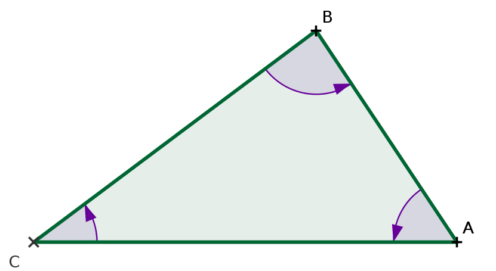
!!!!!!
Angles associés
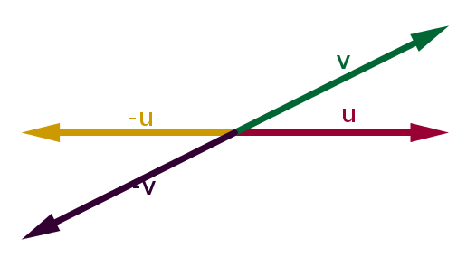
\end{itemize}
Exprimer en fonction de \(\widehat{\left(\overrightarrow{u
;\overrightarrow{v}\right)}\)
l'angle \(\widehat{\left(-2\overrightarrow{v};7\overrightarrow{u}\right)}\)}Montrer que si \(\overrightarrow{u
//\overrightarrow{u'}\) et
\(\overrightarrow{v}//\overrightarrow{v'}\) (ces quatre vecteurs sont non nuls), alors \(2\widehat{\left(\overrightarrow{u'};\overrightarrow{v'}\right)}\equiv2\widehat{\left(\overrightarrow{u};\overrightarrow{v}\right)}\).}
Soit deux droites \(d\) et \(d'\). Une troisième droite \(\Delta\) coupe ces deux
droites
respactivement en en \(A\) et \(A'\).
Déduire de la réponse précédente que \(d//d'\) équivaut à «l'un des angles orientés autour de \(A\) a le même double qu'un angle orienté autour de \(A'\)».
Déduire de la réponse précédente que \(d//d'\) équivaut à «l'un des angles orientés autour de \(A\) a le même double qu'un angle orienté autour de \(A'\)».
Fonctions \(\cos\) et \(\sin\)
\(\sin\alpha\) et \(\cos\alpha\)
Soit \(M\) le point du cercle correspondant à un réel \(\alpha\) (par la fonction enroulement vue précédemment).On note \(\cos\alpha\) l'abscisse de \(M\) et \(\sin\alpha\) l'ordonnée de \(M\) :
\(M\left(\cos\alpha\,;\,\sin\alpha\right)\)
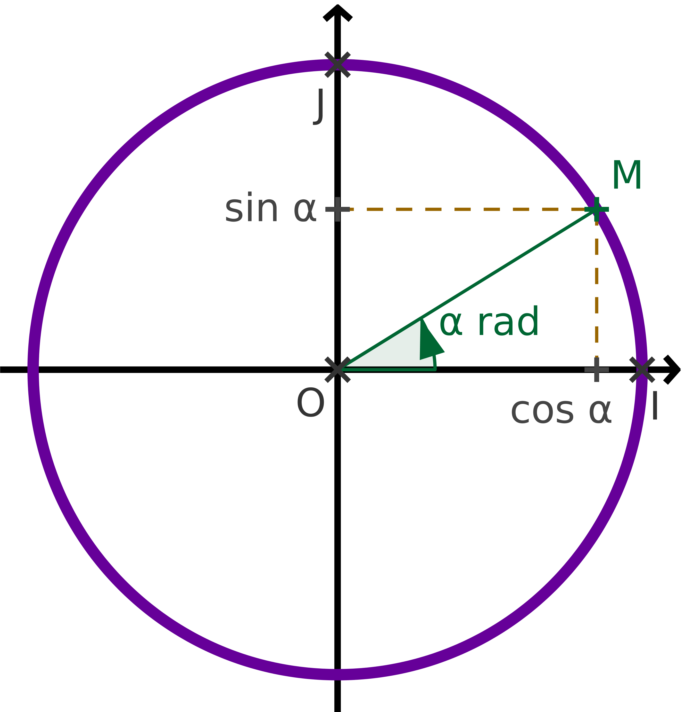
\begin{itemize
\end{itemize} }
!!!!!!
Si l'on ajoute \(2\pi\) à \(\alpha\), on fait un tour du cercle et on revient à la même position,
donc
on
obtient les mêmes valeurs pour \(\cos\) et \(\sin\) : on en déduit que les fonctions \(\cos\) et
\(\sin\)
sont
donc \(2\pi\)-périodiques ou autrement dit, que les valeurs de \(\cos\) sont les mêmes pour tous les
réels
congrus modulo \(2\pi\) à un réel \(\alpha\) donné (idem pour \(\sin\)).
!!!!!!
Si l'on considère que \(A=\left(\cos\alpha;0\right)\in\left[OI\right]\), on retrouve dans le
triangle
\(OAM\)
rectangle en \(M\) les définitions de \(\cos\) et de \(\sin\) vues en troisième, à savoir :
\(\cos\alpha=\frac{OA}{OM}\) et \(\sin\alpha=\frac{AM}{OM}\). La nouveauté est la prise en comptes
de
valeurs
négatives pour \(\cos\) et \(\sin\), apparaîssant si l'on considère des angles obtus.
Propriétés immédiates
!!!!!!
Pour \(x\) réel :
\begin{itemize}
\end{itemize}
!!!!!!
\begin{itemize}
\end{itemize}
Peut-on trouver un réel \(t\) tel que \(\cos t=\frac{1
{4}\) et \(\sin
t=\frac{3}{4}\)
?}Soit \(t\) un réel tel que \(\cos t =\frac{1
{5}\).
- On suppose que \(t\in\left[0;\frac{\pi}{2}\right]\). Calculer \(\sin t\).
- On suppose que \(t\in\left[-\frac{\pi}{2};0\right]\). Calculer \(\sin t\).
Valeurs remarquables
Compléter le tableau de valeurs suivant :
\begin{tabular}{|l||c|c|c|c|c|c|}\hline
\(\alpha\) (rad) & \(0\) & \(\frac{\pi}{6}\) & \(\frac{\pi}{4}\) & \(\frac{\pi}{3}\) &
\(\frac{\pi}{2}\)
&
\(\pi\)
\hline \(\cos\alpha\) & & & & & &
& & & & & &
\hline \(\sin\alpha\) & & & & & &
& & & & & &
\hline \end{tabular}
\newpage
\hline \(\cos\alpha\) & & & & & &
& & & & & &
\hline \(\sin\alpha\) & & & & & &
& & & & & &
\hline \end{tabular}
!!!!!!
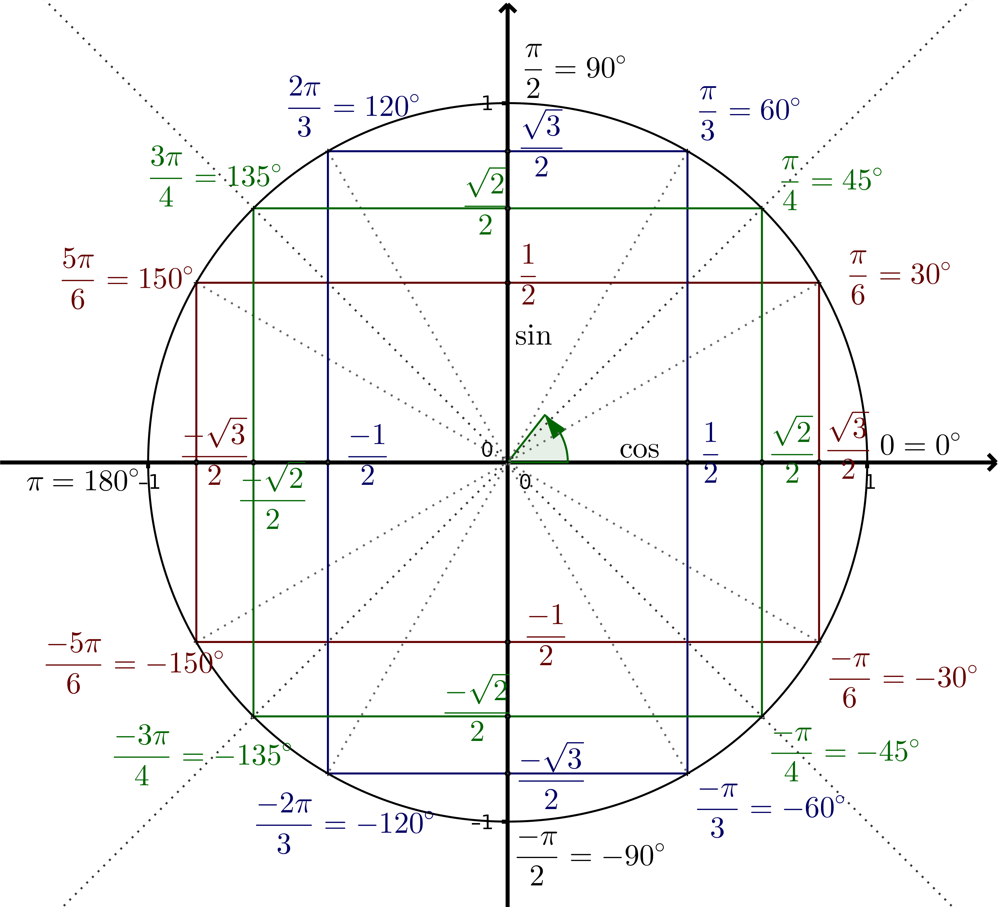
Valeurs associées
Compléter par \(\pm\cos x\) et \(\pm\sin x\) les égalités suivantes :
\begin{itemize}
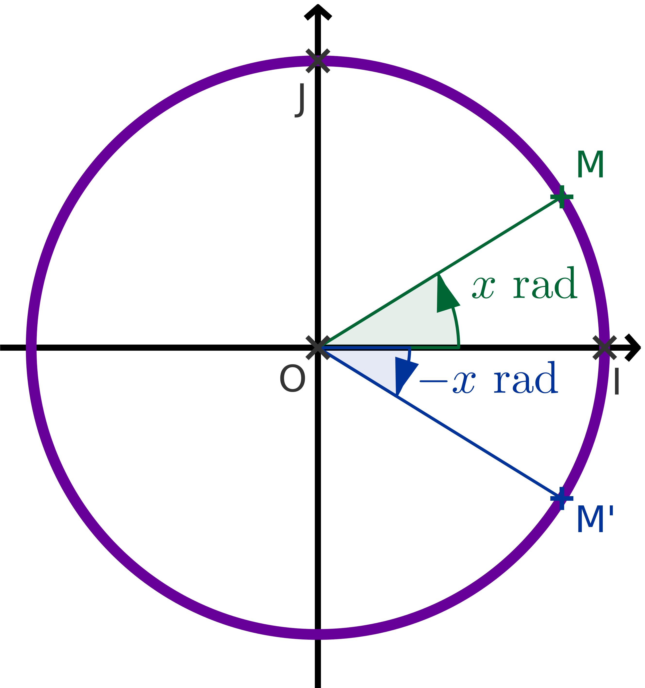
\(~~~~~\cos\left(-x\right)=\)
\(~~~~~\sin\left(-x\right)=\)
!!!!!!
\(\cos\) est paire ; \(\sin\) est impaire.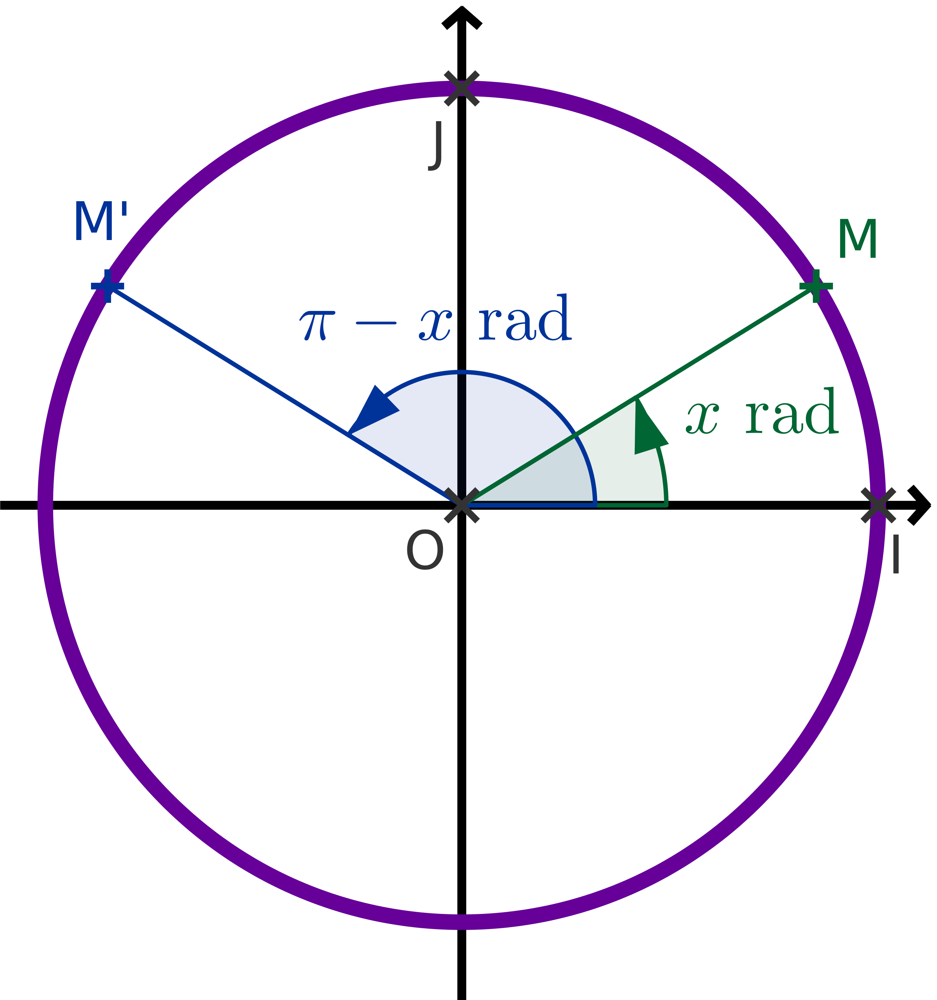
\(~~~~~\cos\left(\pi-x\right)=\)
\(~~~~~\sin\left(\pi-x\right)=\)
\end{itemize} \begin{itemize}
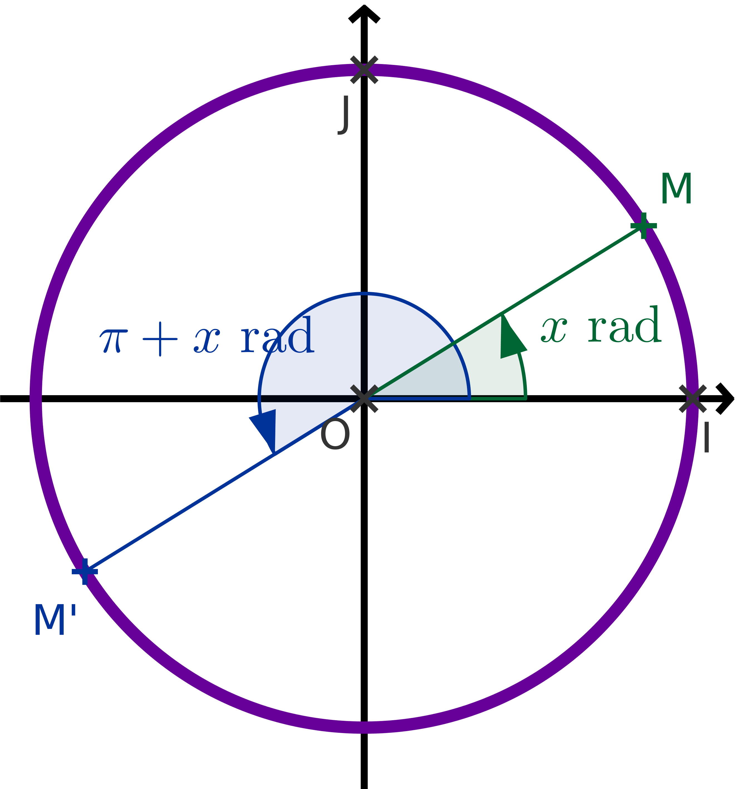
\(~~~~~\cos\left(\pi+x\right)=\)
\(~~~~~\sin\left(\pi+x\right)=\)
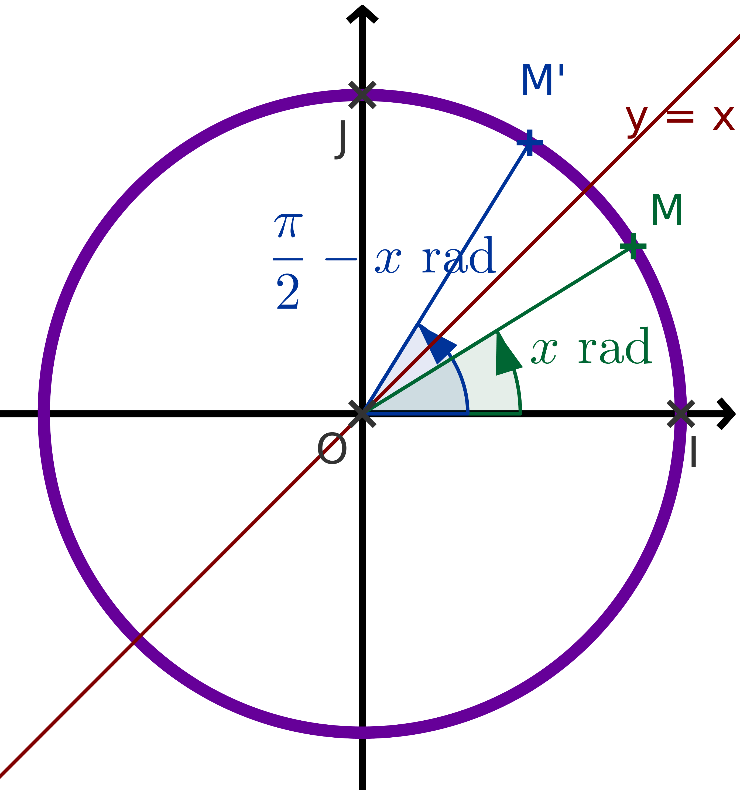
\(~~~~~\cos\left(\dfrac{\pi}{2}-x\right)=\)
\(~~~~~\sin\left(\dfrac{\pi}{2}-x\right)=\)
\end{itemize} \vspace{-5mm}
Simplifier les expressions suivantes :
\begin{itemize
\end{itemize} } \vspace{-5mm}
Fonctions sinusoïdales
\vspace{-5mm}
!!!!!!
\(\cos\) et \(\sin\) étant \(2\pi\)-périodiques, on les étudie sur une période :
\(\left[0;2\pi\right[\).
Signe de \(\cos\) et \(\sin\)
!!!!!!
\begin{variations} x & 0 & ~~~~~~~~~~~~~~~~~~~~ & 2\pi
\filet \cos x & & &
\end{variations} \noindent\begin{variations} x & 0 & ~~~~~~~~~~~~~~~~~~~~ & 2\pi
\filet \sin x & & &
\end{variations}
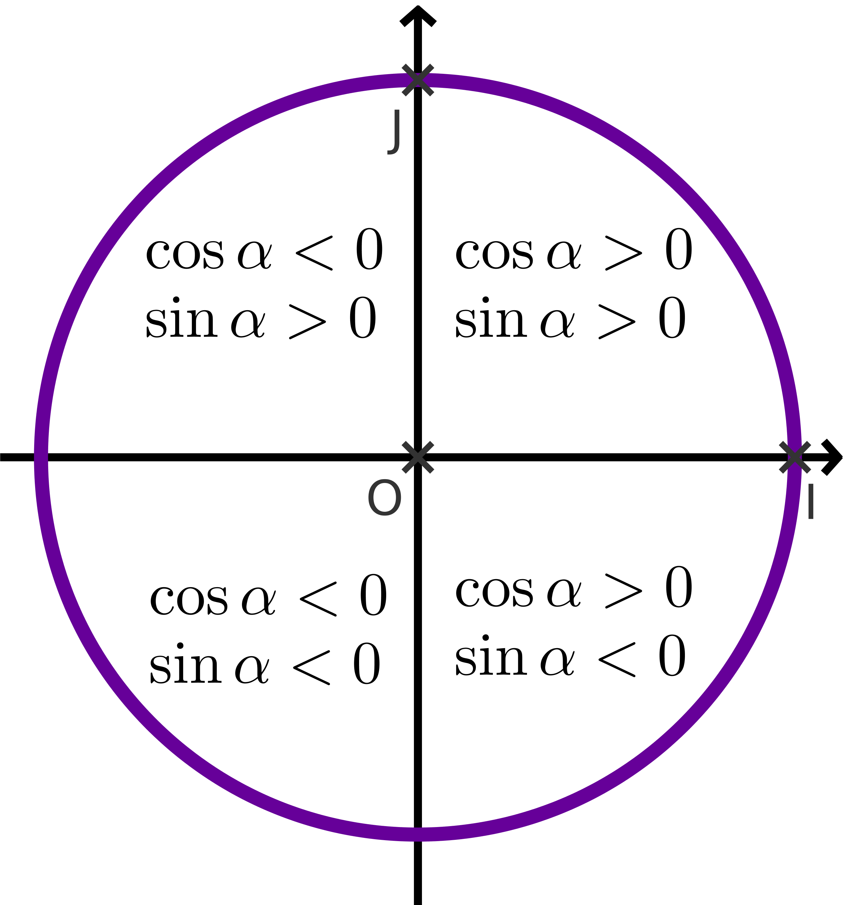
\vspace{-2cm}Graphes
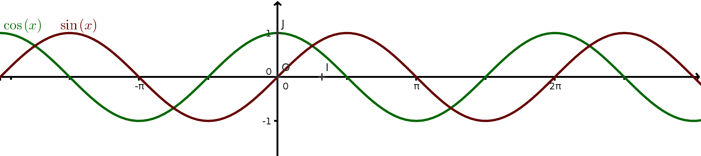
Dresser les tableaux de variation de \(\cos\) et de \(\sin\) sur
\(\left[0;2\pi\right]\) :
\filet \m{\cos x} & & &&&&&& &\h{~}
\filet \m{\sin x} & & &&&&&& &\h{~}
\end{variations}
}
\begin{variations
x & 0 & ~~~~~~~ & \frac{\pi}{2} & ~~~~~~~ & \pi & ~~~~~~~ &\frac{3\pi}{2} & ~~~~~~~ & 2\pi \filet \m{\cos x} & & &&&&&& &\h{~}
\filet \m{\sin x} & & &&&&&& &\h{~}
\end{variations}
!!!!!!
On vérifie bien que \(\sin\) et \(\cos\) sont bornées par \(-1\) et \(1\).Quel est le nombre de points d'intersection des courbes représentant les fonctions
\(\cos\)
et
\(\sin\) sur l'intervalle \(\left[0;200\pi\right]\) ?
Signal sinosoïdal
Une fonction du temps de la forme \(f(t)=A\cos\left(\omega t+\phi\right)\) ou
\(g(t)=A\sin\left(\omega t+\phi\right)\) s'appelle signal sinusoïdal d'amplitude \(A\),
de
pulsation \(\omega\) et de phase à l'origine \(\phi\).
!!!!!!
Le graphe du signal est le même que les fonctions \(\sin\) et \(\cos\) vues précedemment, mais il
oscille
entre
les valeurs \(\pm A\) au lieu de \(\pm1\) et n'est plus \(2\pi\)-périodique :On a \(\omega=\displaystyle\frac{2\pi}{T}=2\pi F\) où \(T\) est la période du signal et \(F=\frac{1}{T}\) sa fréquence.
!!!!!!
\(f(x)=2\cos\left(2\pi x+\frac{\pi}{3}\right)\) et \(g(x)=4\sin\left(4\pi x-\frac{\pi}{6}\right)\)
: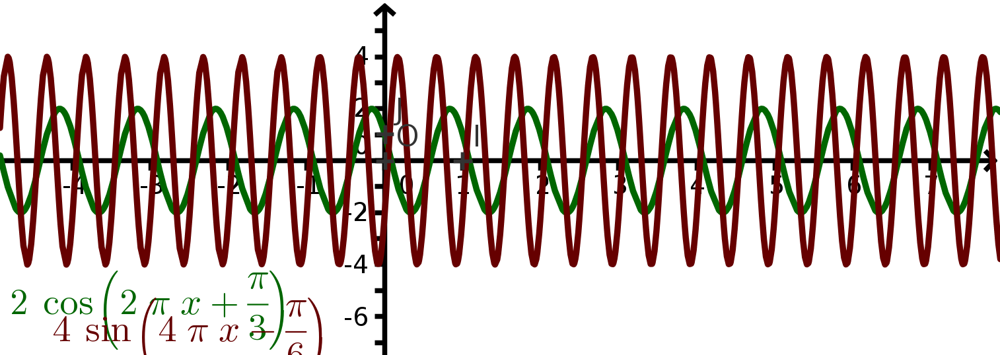
Identifier la période, la pulsation, la fréquence et la phase à l'origine des
signaux
ci-dessus.
Tracer sur \(\left[-2;10\right]\) le signal sinusoïdal \(h(t)=2\cos\left(\frac{\pi
{2}t\right)\).}
On se place dans un repère orthonormé \((O;I;J)\) et dans le cercle trigonométrique
associé.
On considère une horloge analogique tracée sur ce cercle trigonométrique, munie d'une petite aiguille \(\overrightarrow{OP
\) de norme \(\frac{3}{4}\) et d'une grande aiguille
\(\overrightarrow{OG}\)
de
norme \(1\). Le fonctionnement de cette horloge à la fois esthétique et précise est conventionnel ;
et
assuré
par des piles en bon état de marche.On considère une horloge analogique tracée sur ce cercle trigonométrique, munie d'une petite aiguille \(\overrightarrow{OP
On note \(t\) le temps, en heures, et on considère une journée \(\mathcal{D}=\left[0;24\right[\).
- Faire une figure ; on insistera sur l'aspect esthétique de l'horloge.
- Vérifier que pour tout \(t\in \mathcal{D}\), on a :
\(\displaystyle\left\{\begin{array}{l}
\widehat{\left(\overrightarrow{OJ};\overrightarrow{OG}\right)}\equiv-2\pi t\pmod{2\pi}
\widehat{\left(\overrightarrow{OJ};\overrightarrow{OP}\right)}\equiv\frac{-2\pi}{12} t\pmod{2\pi}
\end{array}\right.\) - Il est \(11\)h\(12\). Quel est l'angle aigu formé par les deux aiguilles ?
- À quelle heure de la journée les deux aiguilles sont-elles symétriques par rapport à \((Ox)\) ?
- À quelle heure de la journée les deux aiguilles sont-elles symétriques par rapport à \((Oy)\) ?
- À quelle heure de la journée les deux aiguilles sont-elles colinéaires ? De même sens ? De sens opposé ?
- À quelle heure de la journée les deux aiguilles sont-elles orthogonales ?
(In)Équations trigonométriques
Équation \(\cos x=k\) avec \(k\in\R\)
!!!!!!
\begin{itemize}
\end{itemize} \vspace{-5mm}
\begin{itemize
\end{itemize} }
!!!!!!
on peut utiliser \(\alpha=\arccos k\) noté aussi souvent \(\cos^{-1} k\) ;
\vspace{-5mm} \begin{itemize}
Résoudre \(\cos x=\frac{1
{2}\).}
Équation \(\sin x=k\) avec \(k\in\R\)
!!!!!!
\begin{itemize}
\end{itemize} \vspace{-5mm}
\begin{itemize
\end{itemize} }
!!!!!!
on peut utiliser \(\alpha=\arcsin k\) noté aussi souvent \(\sin^{-1} k\) ;
\vspace{-5mm} \begin{itemize}
Résoudre \(\sin x=\frac{1
{2}\).}
!!!!!!
Attention à ne pas se tromper d'axe en plaçant \(k\) !Résoudre les équations trigonométriques suivantes :
+2\cos x =0\)
- \(3\sin x -5=0\)
- \(\sin^2 x=2\)
- \(\sqrt{2
!!!!!!
On adapte ces méthodes aux inéquations trigonométriques facilement. Résoudre \(\cos x \leq \dfrac{1
{2}\) et \(\sin x > \dfrac{\sqrt{3}}{2}\).}
Coordonnées polaires
Dans un repère orthonormé, soit \(M\) un point du plan distinct de l'origine \(O\).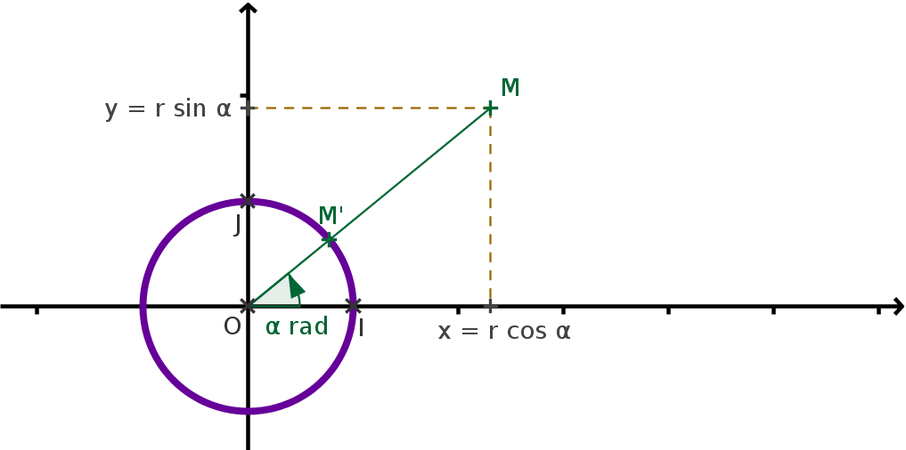
!!!!!!
Tout point \(M\) distinct de l'origine \(O\) peut être repéré par un couple de réels
\(\left(r;\alpha\right)_{\textrm{pol}}\)
\begin{itemize}
\end{itemize}
\(\left(r;\alpha\right)_{\textrm{pol
}\) s'appelle coordonnées
polaires
de
\(M\) dans \((O;I;J)\).}
!!!!!!
On a alors :
\(\displaystyle\left\{\begin{array}{l}
x=r\cos\alphay=r\sin\alpha
\end{array}\right. \Leftrightarrow \left\{\begin{array}{l} r=\sqrt{x^2+y^2}
\cos\alpha=\dfrac{x}{r}
\sin\alpha=\dfrac{y}{r}
\end{array}\right. \)
- Donner les coordonnées cartésiennes de \(A\left(3;\frac{-5\pi
Projection orthogonale
Définition
Soit \(\overrightarrow{F}\) un vecteur, et \((d)\) une droite dirigée par \(\overrightarrow{u}\) :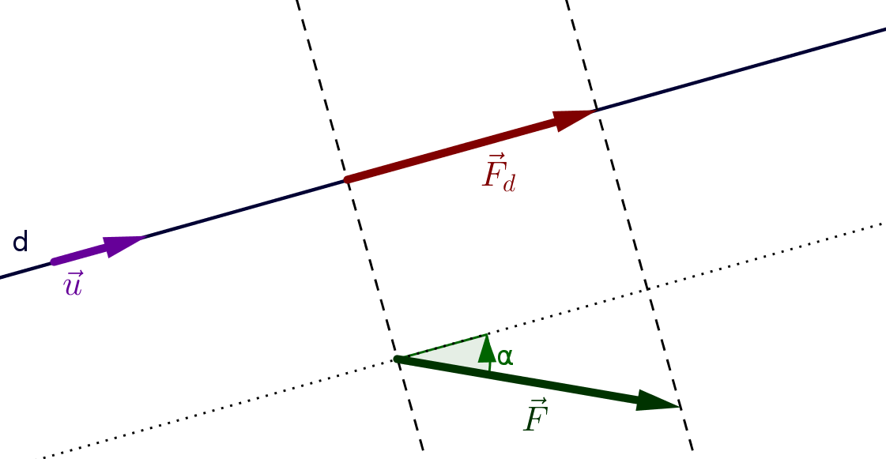
On appelle projeté othogonal de \(\overrightarrow{F
\) sur \((d)\) (on
peut
aussi
dire
sur \(\overrightarrow{u}\), seule la direction importe) le vecteur \(\overrightarrow{F}_d\) défini par
:}
\(\displaystyle\overrightarrow{F}_d=\dfrac{||\overrightarrow{F}||\cos\alpha}{||\overrightarrow{u}||}\overrightarrow{u}\)
\indent
!!!!!!
Tout vecteur dont l'origine et l'extrémité sont placées sur les mêmes droites perpendiculaires à \((d)\)
que
\(\overrightarrow{F}\) a même projeté orthogonal que \(\overrightarrow{F}\) sur \((d)\).Dessiner un vecteur \(\overrightarrow{F
_1\) ayant même projeté orthogonal sur
\((d)\)
que
\(\overrightarrow{F}\).}\(\overrightarrow{v
\), de norme \(3\), fait un angle de \(\frac{\pi}{6}\) avec la
droite
\(d\) dirigée par \(\overrightarrow{u}{3\choose4}\).Donner une valeur approchée de \(v_d\) à \(10^{-3}\) près, ainsi que les coordonnées de \(\overrightarrow{v_d}\) à \(10^{-3}\) près.}
Sur les axes
On se place dans un repère orthonormé \(\left(O;\overrightarrow{i};\overrightarrow{j}\right)\). Toutes les lignes de rappel sont parallèles ou perpendiculaires aux axes. Le vecteur \(\overrightarrow{F}\) fait un angle \(\alpha\) avec l'axe \((Ox)\).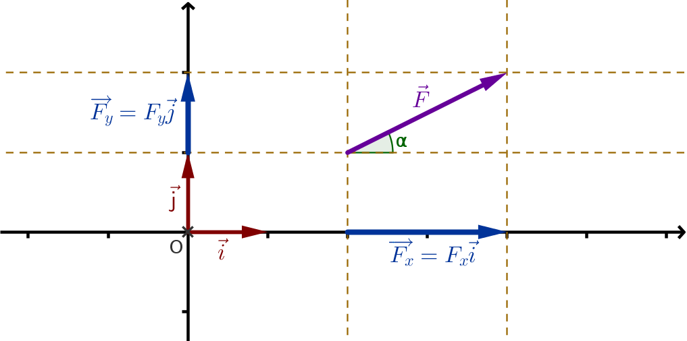
On appelle projeté othogonal de \(\overrightarrow{F
\) sur \((Ox)\) (ou
bien
sur
tout
vecteur de même direction que cet axe, par exemple \(\overrightarrow{i}\)) le vecteur
\(\overrightarrow{F_x}=F_x\overrightarrow{i}\) défini par :}
\(\displaystyleF_x=||\overrightarrow{F}||\cos\alpha\)
\indentEn toute généralité, démontrer que \(F_y=||\overrightarrow{F
||\sin\alpha\).}
Problème
Big Mike et Little Tim font du skate \(M\) sur un plan incliné de \(\alpha=30^\circ\)
long
de
\(OA=20\,\)m. Ils partent de \(D\)u temps \(t=0\) (en secondes), sans vitesse initiale et comptent
arriver
au
point \(A\). On néglige les frottements du skate, les roues ont été changées et c'est de la
top-qualité.
Bilan des forces : Le poids \(\overrightarrow{P
=m\overrightarrow{g}\) du système skate+skateur de masse \(m\) est compensé partiellement par la
réaction
du
support \(\overrightarrow{R}\) : le skate ne s'enfonce pas dans le sol mais il n'y a pas équilibre des
forces
(contrairement au skateur, on y croit), et c'est le projeté orthogonal \(\overrightarrow{F}\) de
\(\overrightarrow{P}\) sur \(DA\) qui va induire un mouvement du point \(M\).
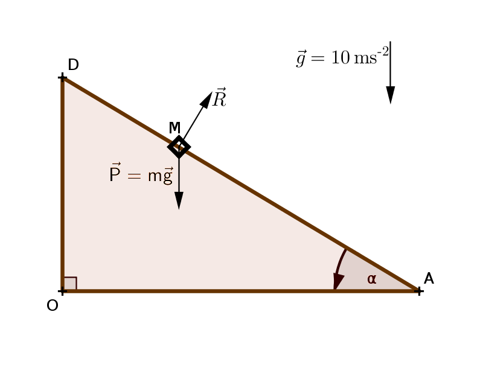
Bilan des forces : Le poids \(\overrightarrow{P
- Calculer \(F\) (\(=||\overrightarrow{F}||\)).
- Relation de Newton : \(\overrightarrow{F}=m\overrightarrow{a}\) où \(a\) désigne
l'accélération
(en
m/s\(^2\)).
Calculer l'accélération du point \(M\). - La situation est-elle changée si le skateur est Big Mike ou bien Little Tim ? S'il n'y a pas de skateur sur le skate ?
- On rappelle que la dérivée de la distance parcourue est la vitesse et que la dérivée de la
vitesse
est
l'accélération.
Calculer la vitesse \(v(t)\) et la distance \(d(t)\). - Au bout de combien de temps le point \(M\) est-il en \(A\) ?
- En déduire la vitesse d'arrivée en km/h.
Formules d'addition, applications
Formules d'addition
!!!!!!
\begin{itemize}
\end{itemize}
!!!!!!
C'est un peu long, mais simple :
!!!!!!
Dans cette démonstration, toutes les longueurs sont exprimées en valeur algébrique pour prendre en
compte le
fait que les angles \(\alpha\) et \(\beta\) peuvent être obtus. On pourra ne pas en tenir compte en
première
approche.
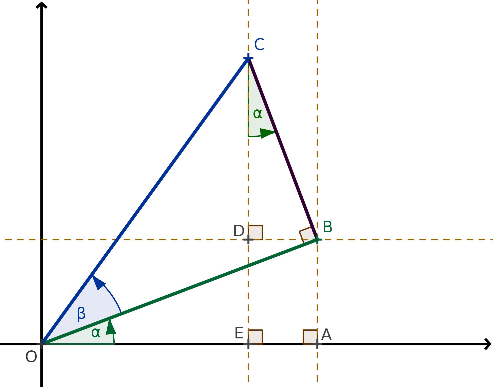
Justifier que \(\widehat{AOB
=\widehat{DCB}\).}On note que \(\overline{DE}=\overline{AB}\) : \begin{eqnarray*} \sin(\alpha+\beta)&=&\dfrac{\overline{ED}+\overline{DC}}{\overline{OC}} =\dfrac{\overline{ED}}{\overline{OC}}+\dfrac{\overline{DC}}{\overline{OC}}
&=&\dfrac{\overline{ED}}{\overline{OC}}\dfrac{\overline{OB}}{\overline{OB}}+\dfrac{\overline{DC}}{\overline{OC}}\dfrac{\overline{BC}}{\overline{BC}}
&=&\dfrac{\overline{OB}}{\overline{OC}}\dfrac{\overline{ED}}{\overline{OB}}+\dfrac{\overline{BC}}{\overline{OC}}\dfrac{\overline{DC}}{\overline{BC}}
&=&\dfrac{\overline{OB}}{\overline{OC}}\dfrac{\overline{AB}}{\overline{OB}}+\dfrac{\overline{BC}}{\overline{OC}}\dfrac{\overline{DC}}{\overline{BC}}
&=&\cos\beta \sin\alpha+\sin\beta \cos\alpha
&=&\sin\alpha\cos\beta+\cos\alpha\sin\beta
\end{eqnarray*}
Démontrer les autres formules par des changments de variables
\(\beta\rightarrow-\beta\) et
\(\alpha\rightarrow\frac{\pi
{2}-\alpha\).}Duplication
Formules de duplication :
En déduire, en fonction de \(\cos x\) et \(\sin x\), la valeur de \(\cos(2x)\) et \(\sin(2x)\).
En déduire, en fonction de \(\cos x\) et \(\sin x\), la valeur de \(\cos(2x)\) et \(\sin(2x)\).
Dérivation
!!!!!!
\(\sin'x=\cos x\) et \(\cos'x=-\sin x\).
!!!!!!
Établir les deux formules précédentes en utilisant le taux de variation en \(x\) de
\(\sin\)
(puis de \(\cos\)), les formules d'addition, et le fait que \(\displaystyle\lim_{h\to0
\dfrac{\sin
h}{h}=1\) et \(\displaystyle\lim_{h\to0}\dfrac{\cos h -1}{h}=0\).}Que se passe-t-il si l'on dérive \(\cos\) ou \(\sin\) 4 fois ?
!!!!!!
Dérivation de fonctions sinusoïdales :
\begin{itemize}
Calculer la dérivée de \(\sin(3t+2)\).
% TERMINALE
!!!!!!
Primitives de fonctions sinusoïdales :
\begin{itemize}
TD -- Étude de fonctions trigonométriques
Dérivées
Calculer les dérivées des fonctions suivantes :
\begin{itemize
Démontrer que la fonction \(f(x)=5x+\cos(3x)\) est strictement croissante sur
\(\R\).
intégrales
Calculer les intégrales suivantes :
\begin{itemize
Limites
Déterminer les limites suivantes (on peut être amené à encadrer \(\sin\) ou
\(\cos\)) :
(x+\sin x)\)
- \(\displaystyle\lim_{x\to+\infty
Bac métropole 2016
~
Lors d'un match de rugby, un joueur doit transformer un essai qui a été marqué au point \(E\) (voir figure ci-dessus) situé à l'extérieur du segment \([AB]\). La transformation consiste à taper le ballon par un coup de pied depuis un point \(T\) que le joueur a le droit de choisir n'importe où sur le segment \([EM]\) perpendiculaire à la droite \((AB)\) sauf en \(E\). La transformation est réussie si le ballon passe entre les poteaux repérés par les points \(A\) et \(B\) sur la figure.
Pour maximiser ses chances de réussite, le joueur tente de déterminer la position du point \(T\) qui rend l'angle \(\widehat{ATB
\) le plus grand possible.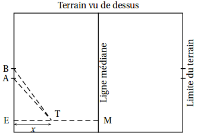
Lors d'un match de rugby, un joueur doit transformer un essai qui a été marqué au point \(E\) (voir figure ci-dessus) situé à l'extérieur du segment \([AB]\). La transformation consiste à taper le ballon par un coup de pied depuis un point \(T\) que le joueur a le droit de choisir n'importe où sur le segment \([EM]\) perpendiculaire à la droite \((AB)\) sauf en \(E\). La transformation est réussie si le ballon passe entre les poteaux repérés par les points \(A\) et \(B\) sur la figure.
Pour maximiser ses chances de réussite, le joueur tente de déterminer la position du point \(T\) qui rend l'angle \(\widehat{ATB
Le but de cet exercice est donc de rechercher s'il existe une position du point \(T\) sur le segment \([EM]\) pour laquelle l'angle \(\widehat{ATB}\) est maximum et, si c'est le cas, de déterminer une valeur approchée de cet angle.
Dans toute la suite, on note \(x\) la longueur \(ET\), qu'on cherche à déterminer.
Les dimensions du terrain sont les suivantes : \(EM = 50\)\,m, \(EA = 25\)\,m et \(AB = 5,6\)\,m . On note \(\alpha\) la mesure en radian de l'angle \(\widehat{ETA}\), \(\beta\) la mesure en radian de l'angle \(\widehat{ETB}\) et \(\gamma\) la mesure en radian de l'angle \(\widehat{ATB}\).
\medskip
- En utilisant les triangles rectangles \(ETA\) et \(ETB\) ainsi que les longueurs fournies,
exprimer
\(\tan
\alpha\) et \(\tan \beta\) en fonction de \(x\).
La fonction tangente est définie sur l'intervalle \(\left]0~;~\dfrac{\pi}{2}\right[\) par \(\tan x = \dfrac{\sin x}{\cos x}\). - Montrer que la fonction tan est strictement croissante sur l'intervalle \(\left]0~;~ \dfrac{\pi}{2}\right[\).
- L'angle \(\widehat{ATB}\) admet une mesure \(\gamma\) appartenant à l'intervalle \(\left]0~;~
\dfrac{\pi}{2}\right[\), résultat admis ici, que l'on peut observer sur la figure.
On admet que, pour tous réels \(a\) et \(b\) de l'intervalle \(\left]0~;~ \dfrac{\pi}{2}\right[\),
\(\tan(a - b) = \dfrac{\tan a - \tan b}{1 + \tan a \times \tan b}\). Montrer que \(\tan \gamma = \dfrac{5,6x}{x^2 + 765}\). - L'angle \(\widehat{ATB}\) est maximum lorsque sa mesure \(\gamma\) est maximale. Montrer que
cela
correspond à un minimum sur l'intervalle \(\left]0~;~50\right]\) de la fonction \(f\) définie
par :
\(f(x)=
x+ \dfrac{765}{x}\).
Montrer qu'il existe une unique valeur de \(x\) pour laquelle l'angle \(\widehat{ATB}\) est maximum et déterminer cette valeur de \(x\) au mètre près ainsi qu'une mesure de l'angle \(\widehat{ATB}\) à \(0,01\) radian près.